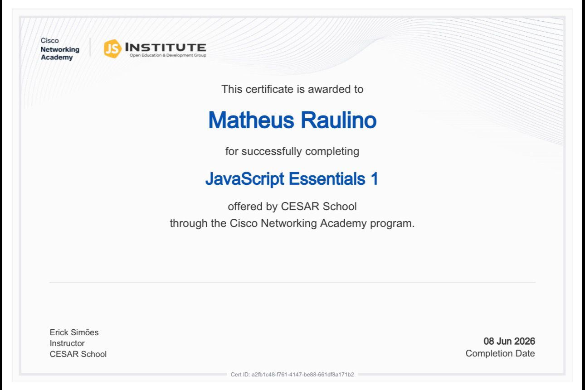
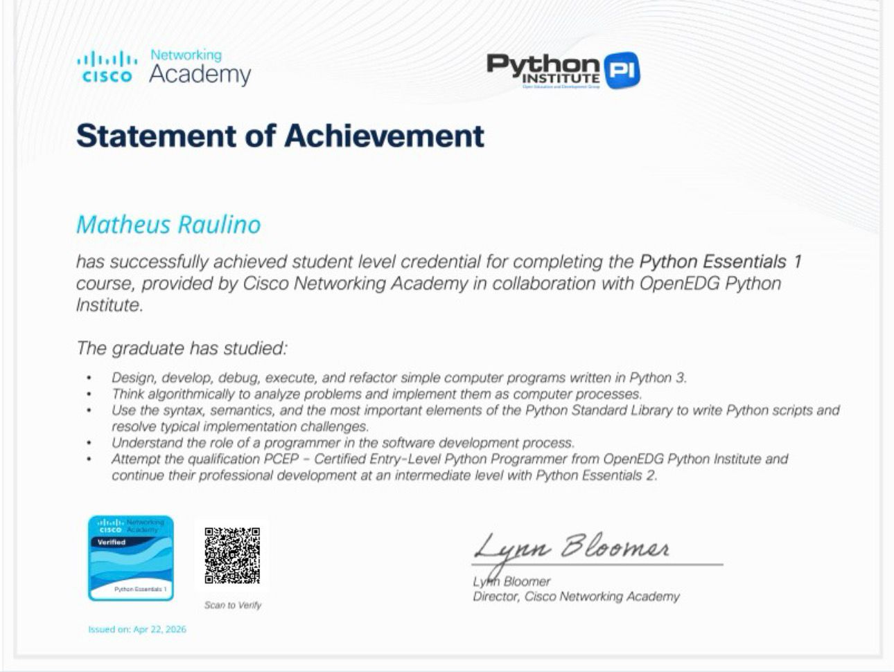
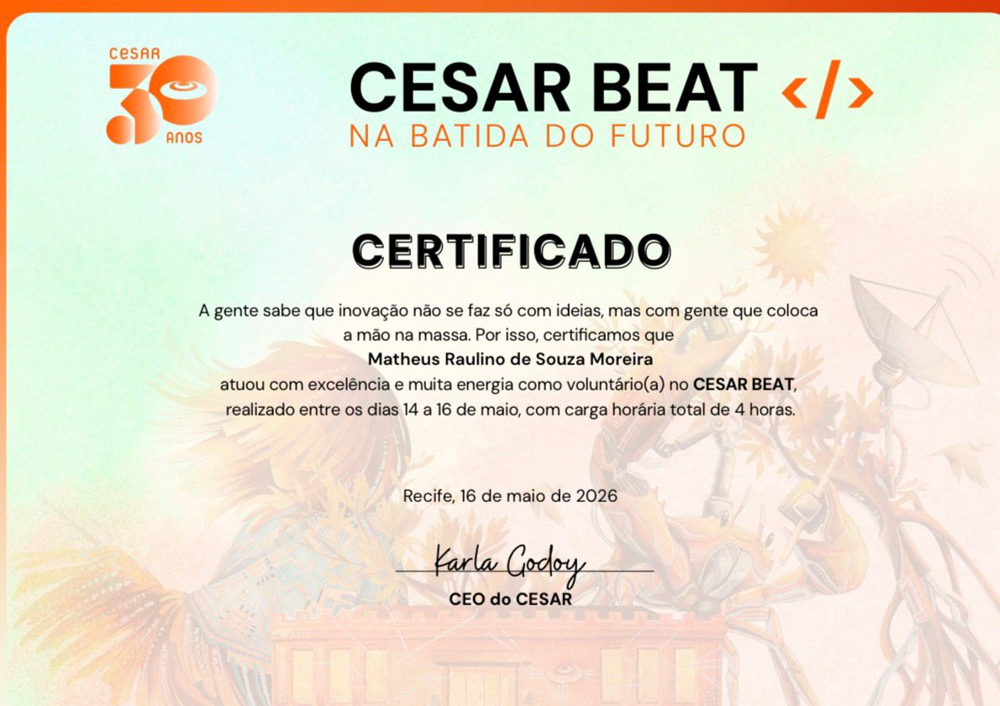

Habilidades Adquiridas
|
CS Student @ CESAR School
Algumas habilidades foram desenvolvidas por mim ao longo desse período, irei detalhar algumas delas aqui abaixo! 😉
Habilidades de Destaque
-
Frontend HTML • JS • CSS
Com as aulas do professor Erick Simões, tive uma grande base e aprofundamento acerca do FrontEnd, indo de conceitos básicos desses mecanismos, até a parte avançada.
-
Fundamentos de Programação Python
Com a professora Carol Melo e Victor, consegui adquirir o conhecimento da base e da parte avançada da linguagem Python, atingindo por completo o domínio da linguagem Python.
-
Cesar BEAT Voluntariado
Em comemoração aos 30 anos de CESAR, houve um evento, o qual participei como voluntario, onde adquiri muita experiência e foi um momento muito enriquecedor para minha jornada acadêmica.
Certificados
-
JavaScript Essentials 1 CISCO JS

-
Python Essentials 1 CISCO Python

-
CESAR BEAT Voluntariado
